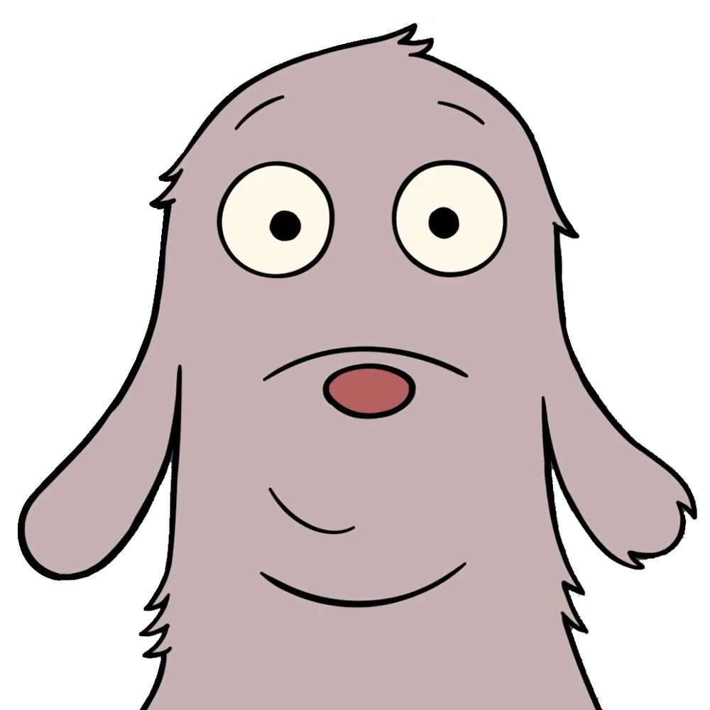
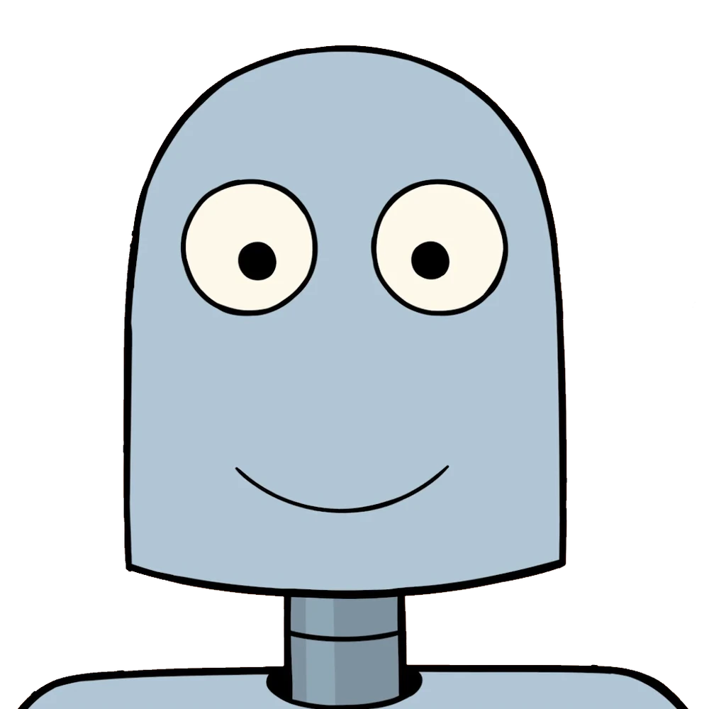
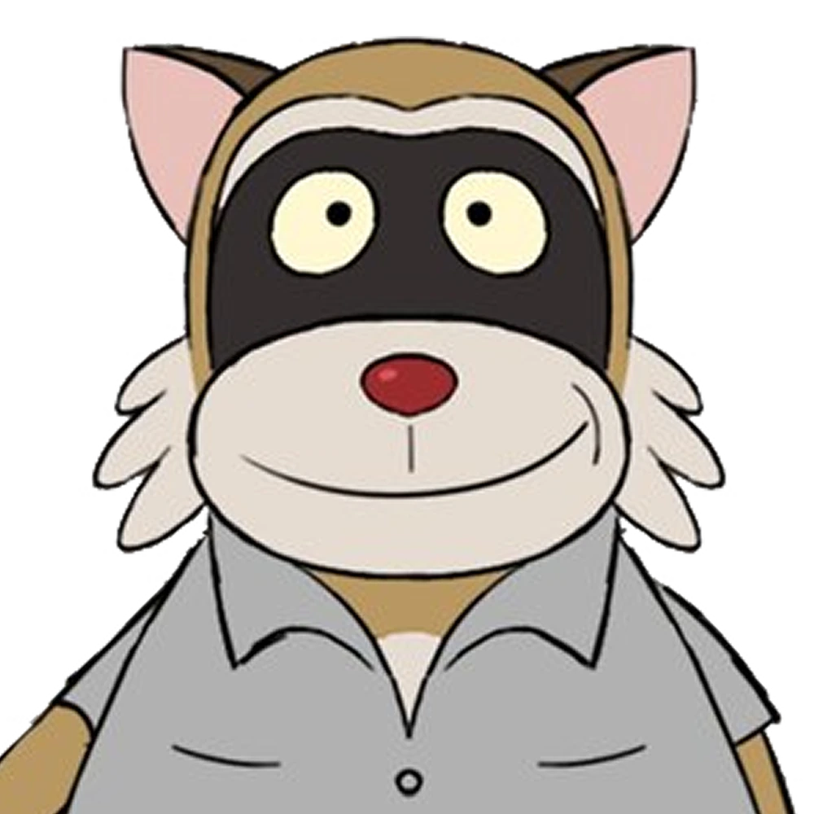

Robot Dreams es una pelicula de tragicomedia española animada lanzada en el 2023, dirigida por Pablo Berger y distribuida por Vertigo Média.
La pelicula tiene una duración de 102 minutos.
Robot Dreams trata sobre Dog, un perro que vive en Nueva York. Dog se siente solo, y ordena un robot para que le haga compañía. Dog y Robot pasan tiempo juntos, disfrutando de su mutua compañía, hasta que un día Robot no puede pararse más.
La pelicula se centra en Dog y Robot, intentando aprender a vivir la vida sin el otro. Esta pelicula es una metafora sobre el termino de una relacion, y como conllevar estos sentimientos.
Dog es el primer personaje principal, el cual funge como el que busca la relacion, y cuando esta no puede continuar, intenta buscar formas de olvidar y seguir adelante casi inmediatamente.
Robot es el segundo personaje principal, el cual funge como la persona que entra a la relacion y, cuando no puede seguir, pasa mucha parte del tiempo originalmente pensando y soñando fantasias de reencontrarse y volver a estar juntos.
Rascal es un personaje secondario. El es el mapache que ayuda a Robot a encontrar una vida despues de Dog, ayudandolo a seguir adelante, aun despues de su perdida.
